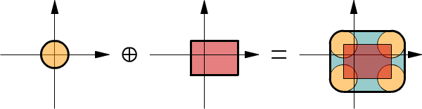
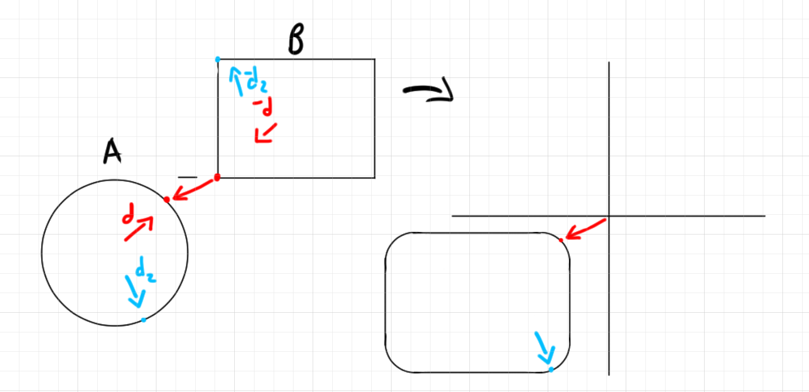

The Gilbert–Johnson–Keerthi distance algorithm is a very simple and neat way to obtain collision information between two convex shapes. There is a lot of information on the web explaining how GJK works so I won't go too in depth with that. I did, however, want to talk more about how to go about implementing GJK in a simple way. There are also a lot of places where you can find this but I wasn't too satisifed with what I found. Most of the implementations are very complicated and obfuscate how simple GJK really is. The best source for implementing GJK I've found is still Casey's old youtube video. It's a great video that you should definitely watch, however it only covers using GJK to test for overlap. He doesn't talk much about using GJK to get the closest distance apart between to non-overlapping shapes or how to get the penetration depth of overlapping shapes to unembed them. That is what I want to focus on more. We will start in 2D and then move on to 3D.
Imagine a shape as a point cloud. So instead of using analytical methods to describe a shape, we would do something like this:
struct Shape {
Vector *points;
int point_count;
};
We know there could exist an infinite amount of points so doing this requires some discretization. Obviously this is not a very effecient way to describe shapes but let's just consider what it would mean for two shapes to overlap. For two shapes to overlap, they must at least share one point in common. In fact, if they share one point in common the shapes are just touching each other in exactly one position. If they share many points in common, that would be in the entire area that is overlapping.
Another way to think about this is if we subtract each point in shape A with every point in shape B, then the points in common would all be zero. Why this is useful will become more apparent when we start thinking about convex shapes. A shape is convex if you can take any two points on it, draw a line, and all the points along that line are inside the shape. What this means if you go from any point on the edge of the shape to any other edge point, we would find no "holes." Really try to understand this because it's why GJK works.
Something we can do with convex shapes is called a Minkowski Sum, where we take every point in shape A and add it to every point in shape B. I know we were just talking about subtracting the points but I wanted to show why we're talking about this first - bear with me for second. The important thing to know about doing this is that it produces another convex shape. A convex shape added with another convex shape makes another convex shape. If we take shape B, negate all the points and then add it to shape A, that would also be a convex shape. So taking all the points in shape A and subtracting from them shape B, produces another convex shape and this is called a Minkowski Difference. Not only is the Minkowski difference a convex shape but we know if the two shapes are overlapping, then one of the points in the minkowski difference is zero. So all we have to do to see if two shapes overlap is to find if the minkowski difference contains a zero position, and the fact that the minkowski difference is another convex shape makes finding this pretty straightforward.
Before we continue, I think it's important to have a strong geometric picture of what a minkowski sum/difference looks like. If you take one of the shapes and place it's center along the edge of the second shape and follow the entire perimeter of the second shape, this is effectively the outer extent of the minkowski sum. Everything within this newly traced perimeter is part of the minkowski sum. Remember the minkowski sum is adding every combination of points from both shapes. What we're doing here is starting with the points that compose the perimeter of the second shape and adding all the points of the first shape. This will produce the new perimeter. Take a look at the image below and see how the circle is traced around the rectangle:
If you instead take the rectangle and trace the circle, you'll get the same result. But what about the difference? It will actually look exactly the same as the minkowski sum but it will be translated somewhere else on the graph. If the shapes are close together, the minkowski difference will be close to the origin. If the shapes overlap, the minkowski difference will contain the origin (the zero vector)...
So do we actually have to make a giant list of point differences and iterate through them to find the origin? No. Although it helps to think of the minkowski sum as a point cloud, we can actually test for the containment of the origin with analytical methods. For example, if we form a line with two points on the perimeter of the minkowski difference, we know the minkowski difference contains the origin if this line does - since it's convex. Similarly, if instead we use 3 points along the perimeter of the minkowski difference to make a triangle, if the triangle contains the origin then we know so does the minkowski difference. And this is effectively what GJK boils down to: Creating a n-simplex that represents an n-dimensional part of the minkowski difference that we will test to see if it contains the origin. For 2D GJK, the highest n-simplex we will make is a 2-simplex (a triangle). For 3D gjk, we will at most use a 3-simplex (a tetrahedron). Now let's go over the actual algorithm.
We will need a function that returns to us points along the perimeter of the minkowski difference. For how the alorithm works, we will actually need this function to return to us the best edge point in a given direction. This is called a support function and it's literally this:
void Vector gjk_support(Shape *a, Shape *b, Vector direction) {
Vector point_a = get_best_vertex_in_dir(a, direction);
Vector point_b = get_best_vertex_in_dir(b, -direction);
return point_a - point_b;
};
To understand why this returns the perimeter of the minkowski difference, observe the image below. Note how to find the point along the red direction "d" of the minkowski difference we first find "point_a" as simply looking for the best vertex along the direction for the circle. Once we have that, then the closest point on shape B will be in the opposite direction. I drew an arrow from "point_b" to "point_a" (the red dots) to show the actual difference. I drew another example in blue with direction "d2" but didn't connect the dots to not clutter the image.
I won't go into too much detail on why we use "get_best_vertex_in_dir()" instead of "get_best_point_in_dir()" right now. But in short "get_best_vertex_in_dir()" will help us get points that are further apart in the minkowski difference, which in return will provide a larger area coverage when trying to find the origin.